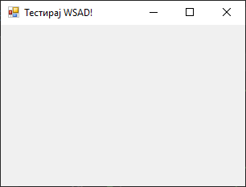
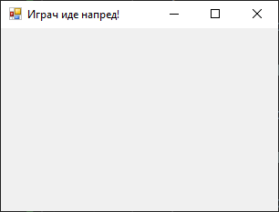
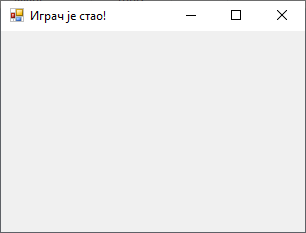
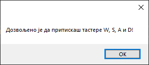

Догађаји тастатуре¶
Слично као и у претходној лекцији, догађаји тастатуре у Windows Forms App (.NET Framework) пројектима омогућавају ти да реагујеш на уносе са тастатуре. Постоје три главна догађаја која су повезана са уносом са тастатуре:
KeyDown- јавља се када корисник притисне и задржи тастер на тастатури,KeyPress- јавља се када корисник притисне тастер који генерише карактер,KeyUp- јавља се када корисник пусти тастер који је био притиснут.
Догађаји тастатуре су веома корисни у разним сценаријима за побољшање корисничког интерфејса и искуства, омогућавање пречица и управљање интеракцијама у реалном времену. У видео-играма, ови догађаји су посебно значајни за контролу кретања и/или акција играча.
Да би користио догађаје тастатуре, својство форме KeyPreview треба да
поставиш на True.
Задатак¶
Креирај нови Windows Forms App (.NET Framework) пројекат са једном формом
димензија 320×240 и текстом „Тестирај WSAD!” у насловној линији форме. Тастери
W, S, A и D се често користе у видео играма за кретање напред, назад,
лево, десно.

Како корисник притиска на тастере W, S, A и D, тако треба да се мења текст насловне
линије форме у складу са тим. На пример, када корисник притисне W,
текст треба да се промени у Играч иде напред!, када пусти тастер W текст
треба да се промени у Играч је стао!:
 
Ако корисник притисне неки други тастер, треба га обавестити поруком да се
тестирају само тастери W, S, A и D.

Кликни на форму, па дефиниши догађај KeyDown…
private void Form1_KeyDown(object sender, KeyEventArgs e)
{
if (e.KeyCode == Keys.W)
{
this.Text = "Играч иде напред!";
}
else if (e.KeyCode == Keys.S)
{
this.Text = "Играч иде назад!";
}
else if (e.KeyCode == Keys.A)
{
this.Text = "Играч иде лево!";
}
else if (e.KeyCode == Keys.D)
{
this.Text = "Играч иде десно!";
}
else
{
MessageBox.Show("Дозвољено је да притискаш тастере W, S, A и D!");
}
}
…и догађај KeyUp:
private void Form1_KeyUp(object sender, KeyEventArgs e)
{
if (e.KeyCode == Keys.W || e.KeyCode == Keys.S || e.KeyCode == Keys.A || e.KeyCode == Keys.D)
{
this.Text = "Играч је стао!";
}
}
Као и догађаји миша, догађаји тастатуре су догађаји ниског нивоа. У овом
примеру, догађајем KeyDown испитује се да ли је притиснут тастер на основу
кода тастера, па се на основу тога исписује адекватан текст у насловној линији
форме. Догађајем KeyUp испитује се да ли је пуштен један од притиснутих
тастер на основу кода тастера, па се на основу тога опет исписује адекватан
текст у насловној линији форме.